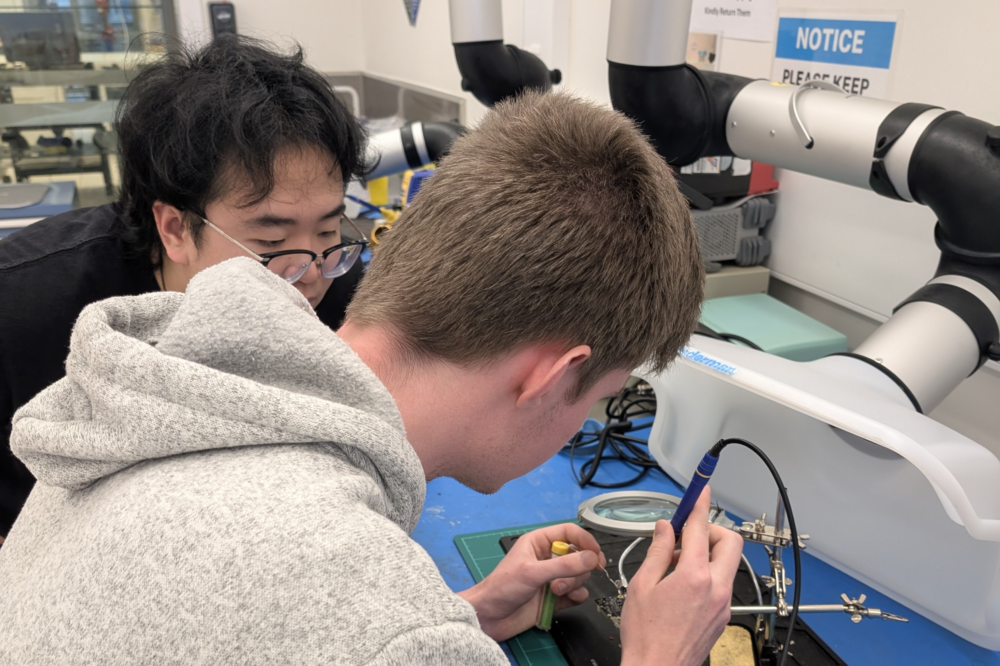
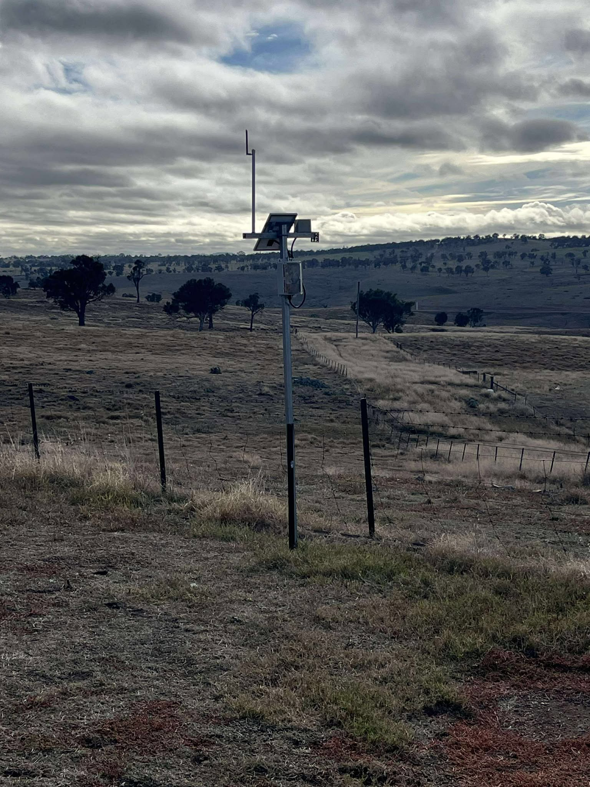
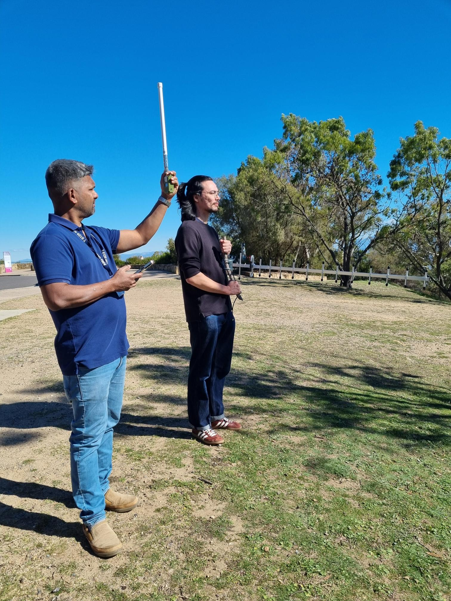
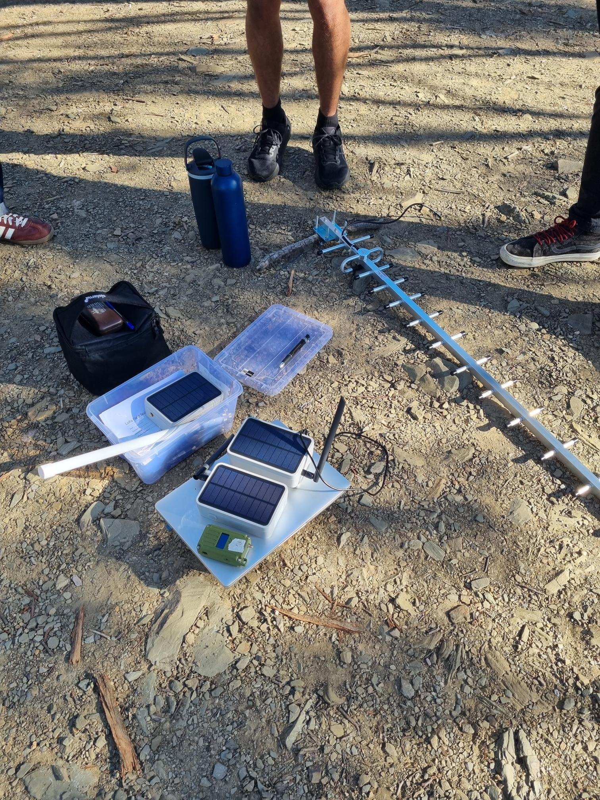
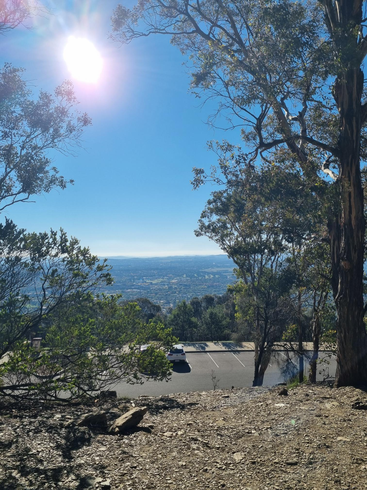
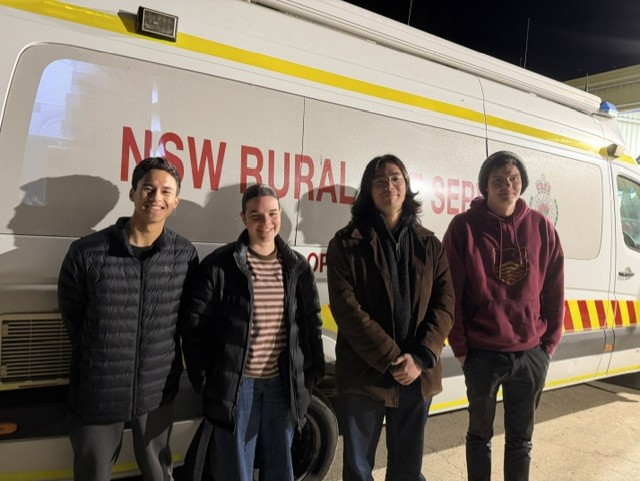

Filling environmental data gaps for better remote disaster response in NSW
Over the 2026 academic year, our team designed, built and tested a low-cost, modular sensor node that collects local environmental data in rural New South Wales and shares it over long-range radio, without relying on mains power or mobile coverage.
Some linked documents are hosted on SharePoint. If you can't open them, contact the team to request access.

Large parts of rural NSW sit outside the reach of dense weather monitoring and dependable mobile coverage. Without local, real-time environmental information, emergency services and communities have less to go on when deciding when to warn, evacuate or respond.
Those gaps get worse during the events that matter most. Severe weather brings down mains power, damages transmission lines, and overwhelms existing communication networks, as communities saw during the 2019-20 Black Summer bushfires and the 2021-22 Lismore floods.
We developed a low-cost, modular sensor node assembled from off-the-shelf components. Each node measures conditions where it stands and transmits its readings over long-range radio, so experts can analyse the data and use it to support early warning systems.
Because it runs on solar power and communicates over the decentralised MeshCore protocol, the node is built to keep reporting when other infrastructure fails. If many of them are deployed, they form a network with planned redundancy: coverage gaps are filled, and if one link drops, data can find another path.
The project built on an earlier ANU capstone project that monitored flooding over a Meshtastic network. We moved to MeshCore and widened the scope from floods to multiple hazards. It sits within the NEMA-funded Disaster Ready Fund initiative, which runs until March 2028.

The node's sensor readings can signal the early onset of six natural hazards common in rural NSW:
Sustained heavy rainfall is an early sign that water levels may rise.
Falling air pressure, heavy rain and gusts point to severe storms building.
Smoke gases, high temperatures, and low humidity flag dangerous fire conditions.
An anemometer tracks wind speed and gusts as they pick up.
A below-ground soil moisture sensor shows when the ground become saturated.
Soil moisture, rainfall and temperature recorded over weeks reveal drying trends.
Packaged data travels node to node across a community network of MeshCore repeaters, with no mobile towers or internet connection needed along the way.
LoRa radio carries data over long distances using very little power.
No reliance on a central servers or towers. Every repeater helps distribute data.
An on-board solar panel keeps the node running without mains power.
Theoretically enough stored energy to keep reporting through extended stretches of bad weather.
Our project ran across two phases: a research phase to make the key design decisions, followed by a build phase that turned those decisions into a working, tested prototype.
Three parallel workstreams each tackled one technical question and reported back with a recommendation.
Evaluated MeshCore as the primary network for emergency data in rural areas.
Researched the hazards facing rural NSW and selected off-the-shelf sensors to detect them.
Sized the power system and designed the design of the sensor node.
The team split in two to bring the Phase 1 recommendations together into a single prototype node.
Wrote the embedded software that reads the sensors, manages power and sends data over MeshCore.
Assembled the sensors, power system and enclosure into a complete node and put it through testing.
From range testing on Mt Ainslie to time spent with the RFS Communications Team.




Developed the embedded firmware for the MeshCore sensor node, and was the team's go-to for microcontrollers and Rust.
Brought electronics expertise to firmware development and was the team's main liaison with external stakeholders.
Supported prototyping and testing, and led the team's Safety in Design workshop.
Co-developed the firmware and helped integrate every subsystem into a single deployable prototype.
Contributed to prototype development and test planning, and managed the project repository.
Contributed to prototype development and testing, and built and maintained this website.
Our short video presenting the problem, the node and what we achieved.
Every document, code file and design file from the project, in one place.
Scope, objectives, stakeholders and system overview.
WBS, schedule, budget, risk register and communications.
Options assessments for network, sensors, and power & enclosure.
Source code for sensor handling, power management and MeshCore.
A working, solar-powered hazard sensor node built from off-the-shelf components.
Everything the next capstone team needs to pick up where we left off.
A one-page visual summary for the capstone exhibition.